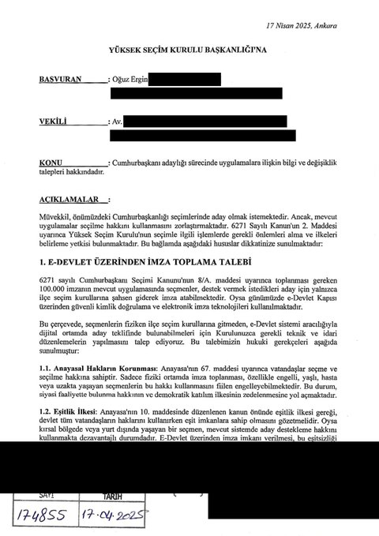
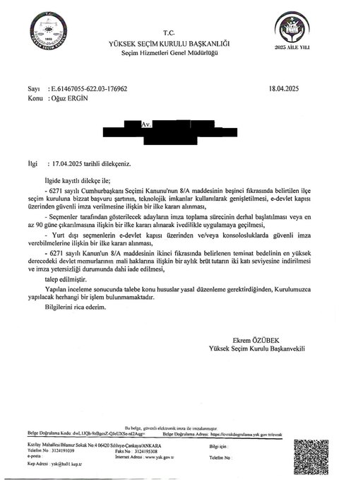
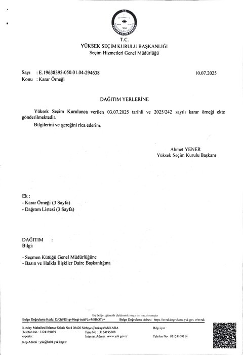
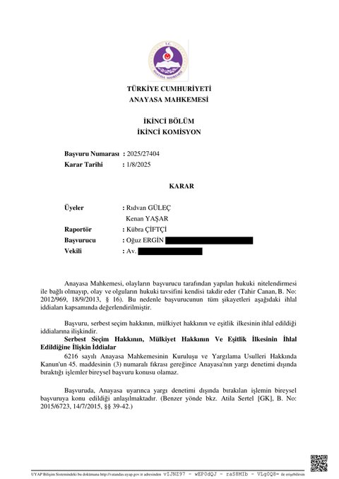
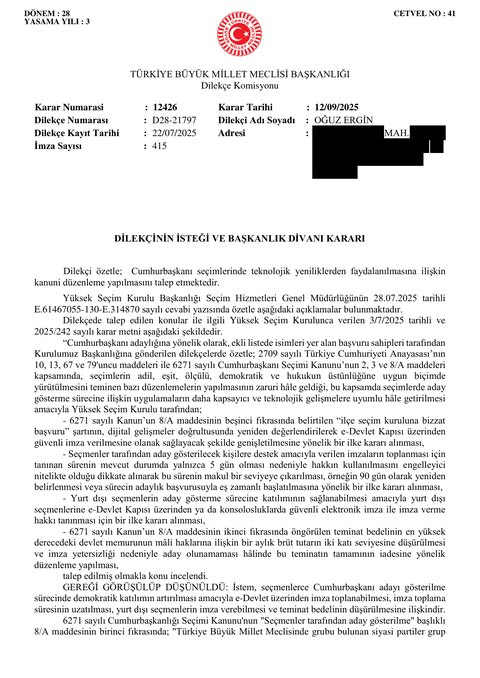

Adaylık Yolunda Hukuki Süreç
Bağımsız adayların önündeki engelleri kaldırmak için 14 ay içinde 5 ayrı kuruma 6 başvuru yaptık. Tüm başvurular, kararlar ve süreç durumu bu sayfada şeffaf bir kronoloji olarak yer alıyor.
5
başvuru kurumu (YSK · AYM · TBMM · AİHM · BMİHK)
1 gün
YSK ilk başvuruyu reddetme süresi
7+ ay
YSK ikinci başvuruya yanıtsızlık
2
aktif uluslararası süreç (AİHM · BMİHK)
Bu sayfada: 4 Talep · Zaman Çizelgesi · Durum Tablosu · Hukuki Çerçeve · Karşılaştırma · Belgeler
Talep Ettiğimiz 4 Değişiklik
Tüm başvurularımızda dile getirdiğimiz somut anayasal talepler:
1
e-Devlet üzerinden imza toplanması
2
İmza süresi en az 90 güne çıkarılsın
3
Yurt dışı seçmenler de imza verebilsin
4
2.000.000 TL güvence bedeli makul seviyeye insin
Zaman Çizelgesi
2025 Mart — Yolun Başı
13 Mart 2025. Cumhurbaşkanlığı adaylığı yolculuğunun resmi ilanı; destek formu açıldı.
2025 Nisan — İlk Başvuru, İlk Ret
17 Nisan 2025. Yüksek Seçim Kurulu'na 4 maddelik resmi başvuru yapıldı.
18 Nisan 2025. YSK başvuruyu 1 günde reddetti (Başkanvekili Ekrem ÖZÜBEK imzalı, 622.03-176962 sayılı yazı). Gerekçe: "Yapılan inceleme sonucunda talebe konu hususlar yasal düzenleme gerektirdiğinden, Kurulumuzca yapılacak herhangi bir işlem bulunmamaktadır."
2025 Mayıs — Anayasa Mahkemesi
20 Mayıs 2025. Anayasa Mahkemesi'ne bireysel başvuru yapıldı (Başvuru No: 2025/27404). Anayasa'nın 67. maddesinde düzenlenen seçme ve seçilme hakkının (m. 67/10/13) ve 13. maddesindeki hakların özüne dokunma yasağının ihlali iddia edildi.
12 Haziran 2025. #ErginIleAdilSeçim kampanyası X ve e-posta listesi üzerinden başlatıldı: destekçilere "aynı dilekçeyi siz de YSK'ya iletin" çağrısı yapıldı. Ertesi günden itibaren takip numaraları gelmeye başladı; 30'u aşkın destekçi 9 ilden (Ankara, Bursa, İstanbul, İzmir, Sivas, Antalya, Kütahya, Tekirdağ, Denizli) bireysel olarak YSK'ya başvurdu — KEP, posta ve şahsen.
14 Haziran 2025. Bir destekçi, ilçe seçim kurulundaki memurun verdiği yanıtı paylaştı: "20 yıldır çalışıyorum, ilk defa böyle bir dilekçe iletildiğini görüyorum."
2025 Temmuz — YSK Gerekçeli Ret, TBMM'ye Vatandaş Dilekçesi
3 Temmuz 2025. Türkiye genelindeki vatandaş dilekçeleri yoğunluğu üzerine YSK, ilk reddinde olduğu gibi 1 günlük basit yazıyla yanıt vermek yerine Tüm Kurulun (Başkan Ahmet YENER + 10 üye) toplanarak YSK 2025/242 sayılı gerekçeli kararı verdi. Kararda dört talep iki farklı gerekçeyle reddedildi:
- e-Devlet imza, yurt dışı seçmen, teminat bedeli (3 talep) → "yasal düzenleme gerektirdiğinden Kurulumuzca yapılacak işlem bulunmamaktadır"
- İmza süresinin uzatılması (90 gün, 1 talep) → Kurul, takdir yetkisinin 6271 sayılı Kanun'un 8/A/9 maddesi uyarınca doğrudan kendisinde olduğunu açıkça kabul etti, ancak "süresinin uzatılması yönünde ilke kararı alınmasına gerek bulunmamaktadır" diyerek yine reddetti.
Sonuç: "1- TALEPLERİN REDDİNE" — oy birliğiyle.
22 Temmuz 2025. TBMM Dilekçe Komisyonu'na D28-21797 sayılı dilekçe verildi (415 vatandaş imzasıyla). Dilekçe imzaya kısa süre açık tutulduğundan tüm destekçilerimiz imza atma fırsatı bulamadı.
2025 Eylül — İç Hukuk Yolları Tükendi, Uluslararası Süreç Açıldı
1 Ağustos 2025. Anayasa Mahkemesi, başvurunun "konu bakımından yetkisizlik nedeniyle KABUL EDİLEMEZ" olduğuna karar verdi (tebliğ: 4 Eylül 2025). Karar gerekçesinde, Anayasa'nın yargı denetimi dışında bıraktığı işlemlerin (m. 79) bireysel başvuru konusu olamayacağı belirtildi. Bu kararla birlikte iç hukuk yolları tüketildi.
12 Eylül 2025. TBMM Dilekçe Komisyonu Başkanlık Divanı, 12426 sayılı kararıyla "dilekçenin Komisyonda görüşülemeyeceğine" karar verdi (TBMM İçtüzüğü m. 116/1). İçtüzük m. 116/2-3 uyarınca dilekçe TBMM Başkanlığına ve Cumhurbaşkanlığına iletildi; karar bastırılarak milletvekillerine dağıtıldı.
15 Eylül 2025. Yüksek Seçim Kurulu'na ikinci başvuru yapıldı (Başvuru No: 375190): seçim takviminin ivedilikle ilanı ve aday adaylığı sürecinin başlatılması talep edildi.
15 Eylül 2025. Aynı gün hak arayışı uluslararası alana taşındı: Avrupa İnsan Hakları Mahkemesi (AİHM) ve Birleşmiş Milletler İnsan Hakları Komitesi (BMİHK) başvuruları yapıldı.
Bugün
🔇 YSK 2. başvurumuza yanıt verilmedi. 7 aydan uzun süredir bekliyoruz. AİHM ve BMİHK süreçleri sürüyor.
Durum Tablosu
| Tarih | Başvuru | Sonuç |
|---|---|---|
| 17 Nis 2025 | YSK 1. başvuru | 🔴 1 günde reddedildi (18 Nis) |
| 20 May 2025 | AYM bireysel başvuru (No: 2025/27404) | 🔴 Yetkisizlik kararı (1 Ağu, tebliğ 4 Eyl) |
| 12 Haz 2025 | #ErginIleAdilSeçim — vatandaş dilekçeleri çağrısı | 🟢 30+ destekçi 9 ilden YSK'ya bireysel başvurdu |
| — | YSK gerekçeli karar (2025/242) | 🔴 Tüm Kurul oy birliğiyle "TALEPLERİN REDDİNE" (3 Tem) |
| 22 Tem 2025 | TBMM dilekçe (D28-21797) | 🔴 Komisyon "dilekçenin görüşülemeyeceğine" karar verdi (12 Eyl, no 12426) |
| 15 Eyl 2025 | YSK 2. başvuru (No: 375190) | ⏳ Yanıt bekleniyor (7+ ay) |
| 15 Eyl 2025 | AİHM | ⏳ Süreç devam ediyor |
| 15 Eyl 2025 | BMİHK | ⏳ Süreç devam ediyor |
Hukuki Argüman Çerçevesi
Başvurularımızın temel anayasal ve uluslararası dayanakları:
Anayasa Mahkemesi (m. 67/10/13/35/62)
- m. 67: Seçme, seçilme ve siyasi faaliyette bulunma hakkı
- m. 10: Eşitlik ilkesi (parti üyesi olan/olmayan vatandaşlar arasında ayrım)
- m. 13: Temel hak ve özgürlüklerin özüne dokunma yasağı
- m. 35: Mülkiyet hakkı (2 milyon TL güvence bedeli açısından)
- m. 62: Yurt dışında çalışan Türk vatandaşlarının siyasi haklarının korunması
Avrupa İnsan Hakları Mahkemesi (AİHM)
- Protokol 1, m. 3: Serbest seçim hakkı
- AİHS m. 14 + Prot. 1, m. 1: Ayrımcılık yasağı ve mülkiyet hakkı
Kabul edilebilirlik dayanağı (AİHS m. 35): AİHM'e başvuru için iç hukuk yollarının tüketilmiş olması gerekir. YSK 18 Nisan 2025'te başvuruyu reddetti, Anayasa Mahkemesi 4 Eylül 2025 tebliğli kararı ile bireysel başvurumuzu yetkisizlik gerekçesiyle reddetti ("YSK kararları AYM tarafından incelenmez"). Bu noktada Türkiye'de başvurulabilecek iç hukuk yolu kalmadı; başvurumuz Sözleşme'nin 35. maddesindeki iç hukuk yollarını tüketme şartını karşılamaktadır. Altı aylık başvuru süresi de tebliğ tarihinden itibaren tutulmuştur.
BM İnsan Hakları Komitesi (BMİHK)
- MSHS m. 25: Kamu işlerine katılma ve seçim hakkı
- MSHS m. 26: Yasa önünde eşitlik ve ayrımcılığa karşı korunma
- MSHS m. 2: Etkili başvuru hakkı
Karşılaştırma: Türkiye, Diğer Demokrasiler
İmza toplama süresi ve yöntemi açısından çağdaş demokrasilerle karşılaştırma:
| Ülke | İmza/Onay Sayısı | Süre | Veren |
|---|---|---|---|
| 🇫🇷 Fransa | 500 | ~4 hafta | Seçilmiş yerel görevliler (belediye başkanları, milletvekilleri vb. — parrainage) |
| 🇦🇹 Avusturya | 6.000 | ~6 hafta | Vatandaşlar (belediyelerde imza) |
| 🇹🇷 Türkiye | 100.000 | 5-6 gün | Vatandaşlar (yalnızca ilçe seçim kuruluna bizzat başvuru) |
Matematiksel Yük
Mevcut sistemde 6 günlük imza penceresi ve günde 9 saatlik mesai dikkate alındığında (toplamda 54 saat), 100.000 imzanın Türkiye genelinde toplanması saatte ~1.850 imzalık bir tempo gerektirir. Bu yük yaklaşık 973 ilçe seçim kuruluna dağıtıldığında bile, vatandaşın bizzat ilçe seçim kuruluna gidip imza vermesi zorunluluğu ile birleştirildiğinde, e-Devlet altyapısı varken fiziki başvuru tek seçenek olmamalıdır.
Belgeler
Sürecin tüm dilekçeleri ve resmi yanıtları arşivlenmiştir. Şeffaflık ilkesiyle, kişisel bilgilerden arındırıldıktan sonra burada paylaşılmaktadır.

YSK 1. Ret Kararı

YSK 2025/242 Sayılı Gerekçeli Karar

AYM Yetkisizlik Kararı

TBMM Dilekçe Komisyonu Kararı
🔒 Diğer Belgeler
AYM 5 Haz 2025 bireysel başvuru dilekçesi, YSK 2. başvuru dilekçesi (375190), AİHM başvuru dilekçesi, BMİHK başvuru dilekçesi.